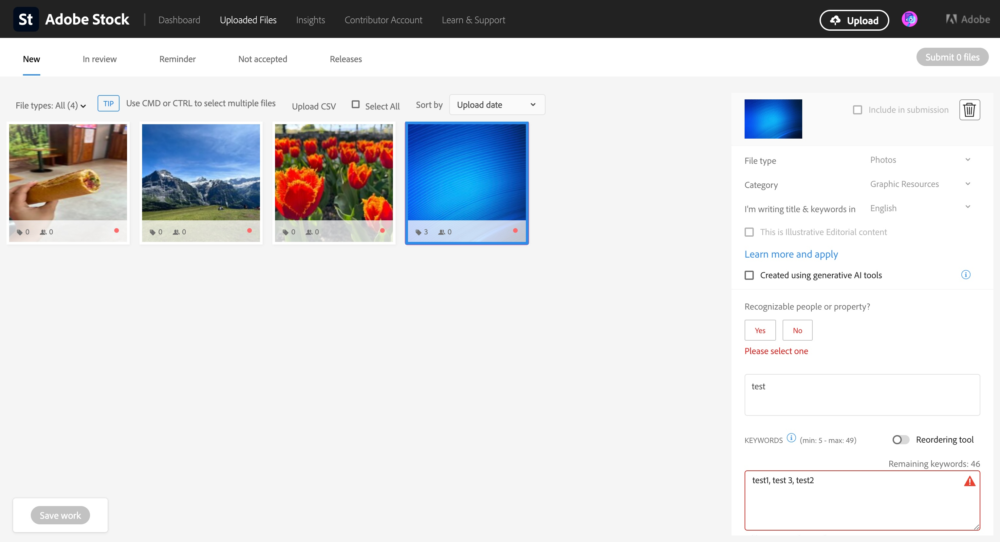
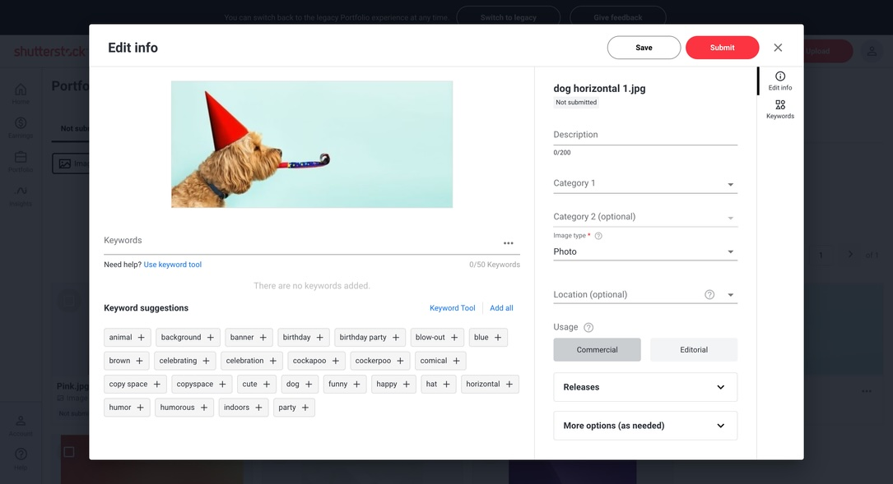

UPLOAD + SUBMIT CONTENT
Removed the friction from uploading and submitting content resulting in 23% increase in submissions
My role
Design lead
Duration
1 year
Activities
UX/UI design, user research, design handoff
Platform
Marketplace, SaaS
Overview
Shutterstock Contributor is a global marketplace that provides a platform for photographers and creators to showcase and sell their work. When the platform was redesigned several years ago, the uploading and submitting design was met with negative feedback as it did not meet user's expectations and they preferred our competitors' experiences.
In an effort to right the wrongs, I went back to the drawing board to redesign the experience from the ground up. The goal was to reduce friction between upload and submission to increase contributor submissions.
Challenges
What contributors got instead
Editing directly within the grid view with a side panel on the right is an industry standard. Every competitor including Adobe Stock and Getty Images used this setup which users have grown accustom to and expect.
What contributors got instead
We veered from the industry standard thinking a more focused approach editing in a popup modal would be better. Unfortunately, this caused much friction as it added more interactions to get to the same editing state and users couldn't switch between the assets as easily leading to frustration and resulting in low engagement.
Design approach
Before I started any designing, I outlined a loose framework of what I wanted to accomplish and shared it with my product partner for buy-in and feedback.
Research
Existing data
Together with my product partner, we gathered and reviewed all the data we could find including:
- Constructive feedback on uploading and submitting from several site surveys
- Content submission data whic showed a steady decline of a couple hundred thousand every month
- Only 16% of active contributors have submitted at least 1 asset in the past 12 months
User research
I conducted a handful of moderated interviews with contributors of varying levels of experience. Through these interviews, we gained valuable insights into their habits, challenges, and needs, including:
- Differing uploading methods: ranging from onsite uploading, to FTP bulk file uploading, to using 3rd party tools to manage everything from uploading, editing to submitting.
- Using AI for editing content: Numerous contributors use AI to enhance their descriptions and to generate unique keywords.
- Quality of life improvements: There's missing functionality from the redesign such as filtering their view and the ability to re-submit rejected assets easily
These findings validated and complimented the existing research we found especially in the survey results.
Synthesize + Model
Before jumping into designs, I created a visual diagram to document the findings from research and to illustrate to stakeholders on which areas we should prioritize in reducing friction during content submission.
We identified that starting with filling in the content details is where the friciton starts all the way through fixing any rejected assets with errors.
Ideate
The base framework was in place with the side-by-side editing panel, so the focus was about incorporating critically missing functionality and simplifying the form, adding key pieces of information, and how to add AI features.
I focused on reformatting the content to fit within the new framework including key pieces of glanceable information on the cards, and reorganizing the panel to reduce cognitive load.
By clicking on the AI Auto-fill CTA, the platform will auto-generate a description and keywords for the selected images and all the contributor has to do is review, edit, and submit.
User testing results
After several design critiques with different stakeholders, I ran the designs through usability testing to ensure it passed usability and that the new designs closely matched user's expectations. The method I used was unmoderated interviews via UserZoom.
Learnings
Overall, the new experience was successful passing all of the usability tasks with only minor adjustments needed. The AI auto-fill feature was well received by participants, and majority of the reactions found it very helpful. The feedback helped us refine the designs and helped us gauge their interest in capabilities that will save them a lot of time by streamlining the submission process.
Engineer handoff
Our engineer team was integral throughout the entire process as they had historical knowledge of how the site functioned and how we could efficiently pivot and make the necessary changes to improve the experience. We were in constant communication through grooming and feedback sessions and I provided extensive documentation of the functionality, grid system, and all of the edge cases.
Final designs
Conclusion
The new experience outperformed the legacy experience with both casual and power users.
Success metrics
- Boost in submission volume velocity
- Increase in user engagement comparing between the legacy and the new experience
- Increase in total library growth
1. Results
+5%
Boost in submission volume velocity
+27%
Increase in total library growth
+4%
Increase in Free trial signups
2. Takeaways
- The variant saw increased click activity on specifically promoted elements, demonstrating the ability of the new nav design to promote specific products/ features
- Add later
- Add later